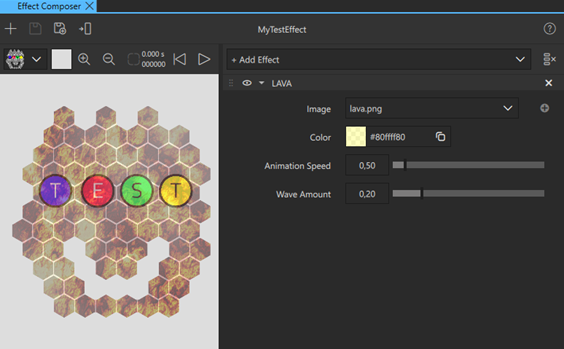
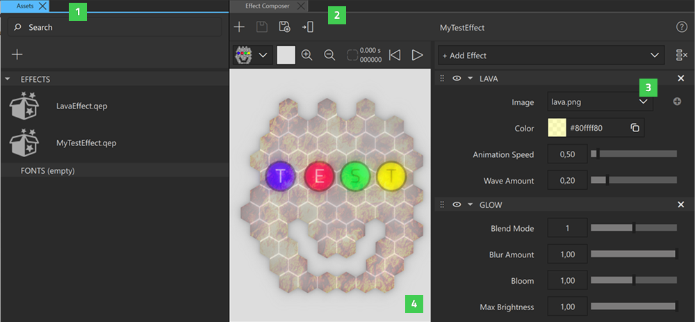

Effect Composer
Use Effect Composer to create post-processing effects that can be applied to 2D or 3D components. The effects created with Effect Composer are shader effects, which can be used in any Qt Design Studio projects.

Composing a Custom Effect
- To create a new custom effect, do one of the following:
- Right-click anywhere in the Assets view (1) and select New Effect in the dialog. Give your new custom effect a name and select Create.
- Open the Effect Composer view (2), select Add Effect, and then select the effects you wish to use from the dropdown menu. The added effects appear in the effect stack (3). You cannot add some of the effects to the same custom effect.
- Adjust the effect parameters to modify your custom effect. View the preview panel (4) to see how your effect affects a component before assigning it to one. Use the preview panel toolbar to select the preview image and the preview panel background color.
- Finally, select to save your custom effect. If the custom effect is still Untitled, name it, and then select Save. Select to save the custom effect under a different name, for example to create variations of the effect you composed.

The saved custom effects appear in the Assets view. Double-click a custom effect in Assets to view and edit it in Effect Composer. To delete a custom effect, right-click it in the Assets view, and then select Delete File.
Assigning a Custom Effect to a Component
To assign your newly created custom effect to a 2D or 3D component, do one of the following:
- Select a component in the Navigator, 2D, or 3D view, and then select in Effect Composer.
- Drag the custom effect from Assets to the component in Navigator or the 2D view.
Note: To assign an effect to a component, you need to save it first.
Stacking Effects
To compose complex custom effects, add multiple effects to your stack in Effect Composer. The order of effects in the Effect Composer stack determines the order they are rendered, which affects the final output of the custom effects.
To change the position of an effect in the stack, drag the effect by the handle () to the desired position.
To determine whether or not each of the effects in the stack is rendered, toggle the visibility on ( ) and off ().
) and off ().
To clear the effect stack, select .
Using Animated Effects
Some of the effects in Effect Composer are animated. Preview the animation in the preview panel using the play, pause, and restart animation buttons.
When an animated effect has been applied to a component, the animation plays by default in Live Preview and when you run the project. To define whether the animation plays or not, select the assigned effect in Navigator, and in Properties > Exposed Custom Properties, select or clear the timeRunning checkbox.